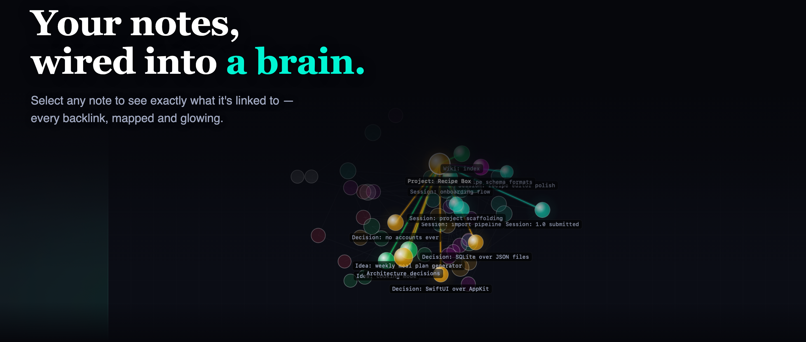
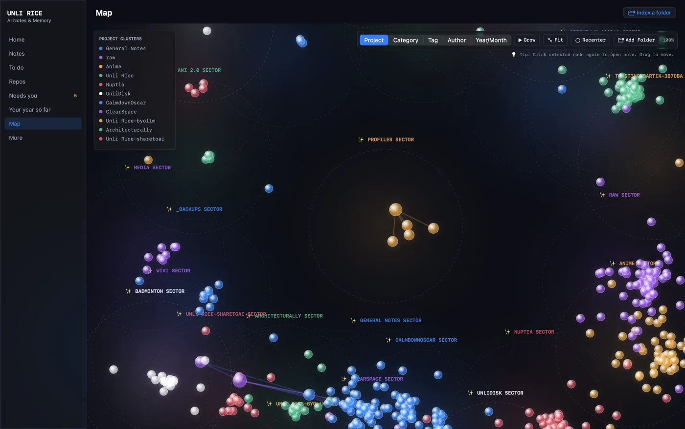
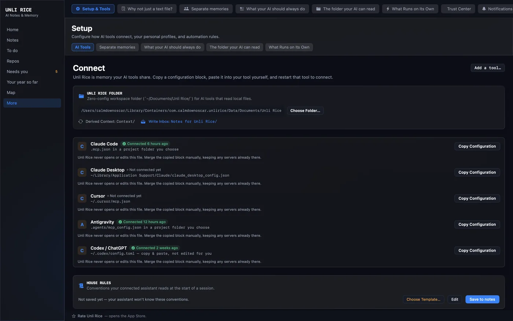
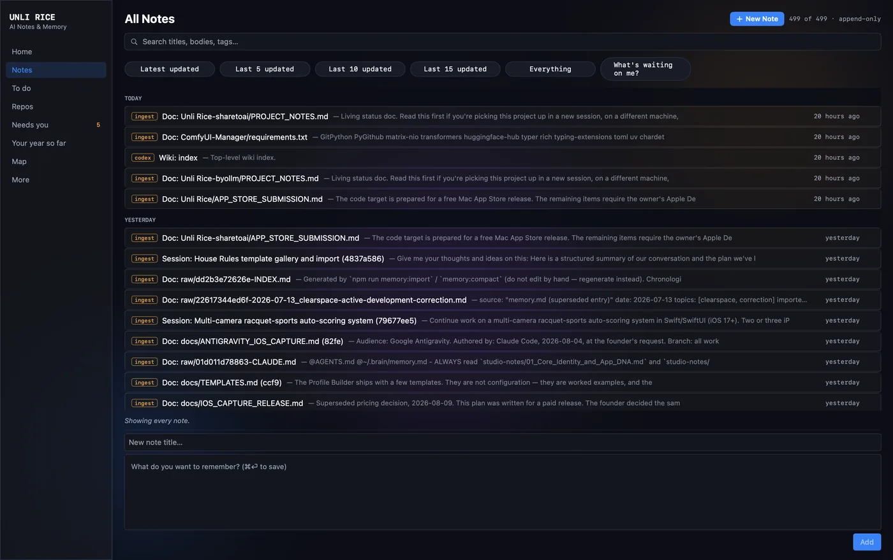
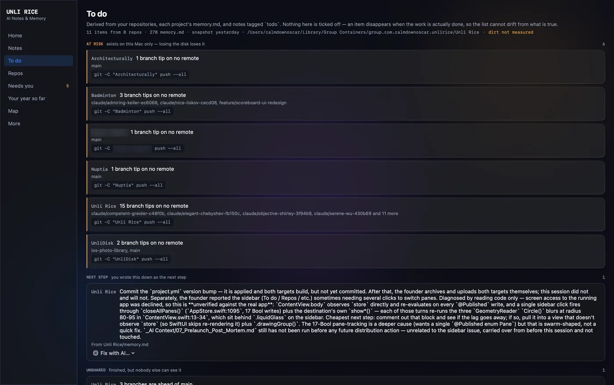

Unli Rice
A persistent memory layer for AI agents. Claude, Codex, Antigravity, Gemini — every coding tool you connect reads and writes into the same local note log over MCP, so nothing gets re-explained and no thread is ever really lost between sessions or tools. Append-only, no destructive delete, every write attributed to whichever agent made it.

One log, every agent reads and writes the same notes
The vault lives on your Mac as an append-only event log — no note is ever silently overwritten, structural changes are proposed rather than applied automatically, and every entry carries the name of the agent that wrote it. Switch from Claude to Codex mid-task and the context is already there.

Map — every note, clustered by project
Connect — one config block per tool
Notes — searchable, tagged, append-only
To do — derived, not maintained by handUnli Rice centers on the local Mac event log, paired with a shipped iOS capture companion for recording thoughts on the go. Point the phone at an iCloud folder and the two connect; leave it unset and nothing leaves the phone.
Unli Rice — Mac app
Shipping nowThe memory log and MCP server, running locally. Every connected agent reads Wiki: index-style hubs and writes attributed notes into the same append-only history.
iOS Capture — satellite note-taker
Shipping nowA one-screen iPhone app for the thought you have while walking: record, live transcript, done. No chat app to open, no model to pick, no 30-second dictation cutoff. Audio is written to disk before transcription ever starts, so a capture never depends on a network connection to survive.
Sync — per-device shards
Shipping nowSync is off until you choose an iCloud folder in Settings. Once you do, the phone still never touches the Mac's log directly: it writes its own append-only file into that folder, and the Mac imports and merges by content, never by overwrite. A phone offline for a week and a Mac that catches up later resolve the same way — nothing lost, nothing duplicated.
Independent on purpose
Unli Rice and Unli Disk are two separate Mac apps from the same one-person studio — different codebases, different data, no shared backend or account system between them. Unli Rice is a memory layer for AI agents; Unli Disk is a disk-space analyzer and cleaner. That separation is deliberate: if one ships late, has a rough App Review cycle, or just has a bad week, the other keeps working exactly as it did before. We're exploring making the two easier to discover together further down the line — but each app is built to stand on its own, fully usable and fully purchasable by itself, permanently.
Platform
Native Swift app with a local MCP server — no cloud dependency for the core log.
Data model
Append-only event log. Nothing is destructively deleted; structural changes are proposed, never auto-applied.
Local privacy
Local storage, no account. Notes are files on your Mac — no tracking, no account server, and no sync service of mine in between; the optional phone-to-Mac hop is your own iCloud folder. iOS Capture transcribes on-device with SpeechAnalyzer, and the recorded audio never leaves the phone. The one thing that travels is what you ask an assistant to read: Unli Rice serves notes over MCP, so a connected cloud assistant sees the notes it requests. Point it at a local model and nothing leaves at all.
Multi-agent
Any MCP-speaking tool can connect — Claude Code, Codex, Antigravity, and others — each identified by name in the log.
Open source
MIT licensed. The core log and MCP server are on GitHub for anyone to read, audit, or build on.